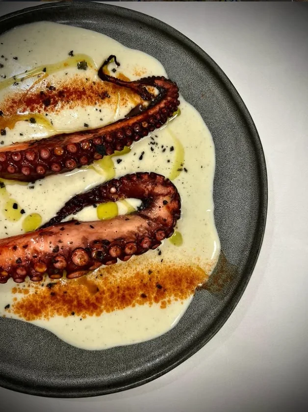
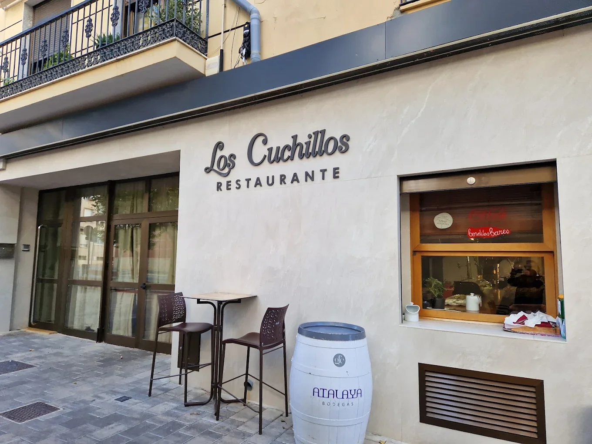
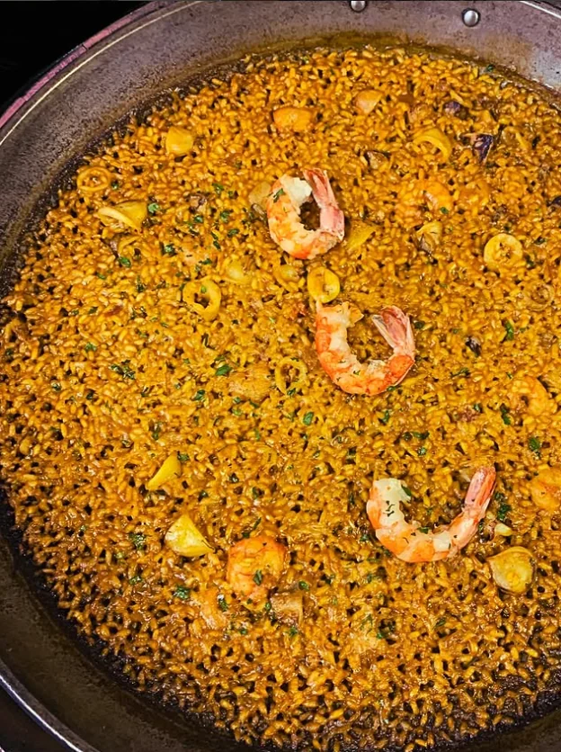
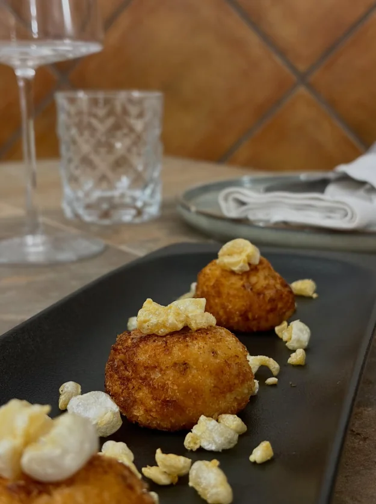
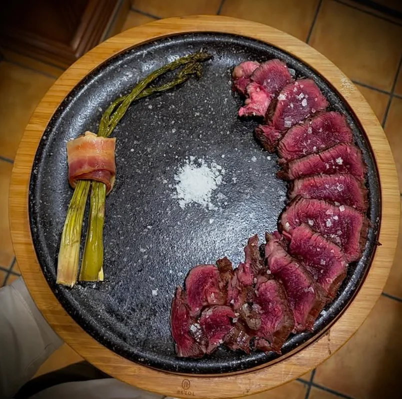

01
Pulpo a la brasa
Sobre crema templada, aceite de pimentón y sal en escamas.

Desde 1973 servimos en Almansa una cocina tradicional adaptada a los nuevos tiempos, sin perder la esencia ni las raíces de la cocina de siempre. Producto seleccionado, brasa, arroces melosos y manos que conocen el oficio.
Un lugar para quien viene a disfrutar de una comida de verdad: sabores reconocibles, materia prima de calidad y la tranquilidad de comer bien.
Nuestra historia
Sobre crema templada, aceite de pimentón y sal en escamas.

Nuestra especialidad. Fondo marinero, gamba roja y el punto justo.

Cremosas por dentro, crujientes por fuera. Las de toda la vida.

Creemos que un buen plato nace mucho antes de la cocina: en el productor, en la temporada, en la pieza bien escogida. Quesos curados, carnes maduradas, pescado y verdura de mercado. Lo tratamos poco, porque la calidad no necesita disfraces.

El gazpacho manchego, la carne a la piedra, los torreznos crujientes y toda nuestra variedad de arroces — a banda, de marisco, de pollo y conejo. Recetas de aquí, hechas con tiempo.
Descubrir la carta“En nuestro restaurante, la cocina es un arte que honra el pasado y abraza el futuro.”
Los Cuchillos · AlmansaAtendemos reservas por teléfono y WhatsApp. Estaremos encantados de prepararte un arroz por encargo.